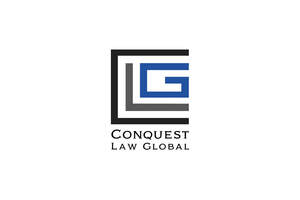

Trade Mark Journal No.2025/051 19 December 2025
UK00004307633 9 December 2025 (16,35,36,41,45)

- Class 16
- Law digests; Law reports; Legal journals; Legal pads; Rule books.' .
- Class 35
- Marketing consulting; Management consulting; Marketing consultancy; Professional business consulting; Business organisation and management consulting; Business consulting; Business management consulting; Business management and consulting; Business organisation consulting; Consultancy (Professional business-); Professional business consultancy; Business consultancy (Professional-); Business organization and management consulting; Business research consulting; Personnel management consulting; Corporate management consultancy; Business organization consulting; Career planning consultancy; Business management consultancy; Business management and consultancy; Business management consultancy and advisory services; Consultancy and advisory services for business management; Business management and organisation consultancy; Business management organisation consultancy; Business organisation and management consultancy; Business management and organization consultancy; Business management consultancy in the field of executive and leadership development; Business consultancy; Business planning consultancy; Professional consultancy relating to marketing; Personnel consultancy; Business organisation and management consulting services; Business marketing consultancy; Business consultancy and advisory services; Business advisory and consultancy services; Management consultancy (Personnel -); Personnel management consultancy; Consultancy and advisory services in the field of business strategy; Recruitment consultancy for lawyers; Direct marketing consulting; Business organization consultancy; Consulting services in business organization and management; Business process management and consulting; Business management consulting services; Business management and consulting services; Business appraisal consultancy; Business recruitment consultancy; Business marketing consulting services; Corporate management consultancy services; Professional consultancy relating to business management; Strategic business consultancy; Business relocation consulting; Business organisation consultancy; Assistance, advisory services and consultancy with regard to business management; Professional business consultancy services; Business management and organization consultancy services; Management consultancy services; Business management and organisation consultancy services; Personnel management and employment consultancy; Assistance, advisory services and consultancy with regard to business planning; Business process management consultancy; Assistance, advisory services and consultancy with regard to business organization; Professional consultancy relating to personnel management; Consultancy regarding the organization or managing of a trade company; Business consulting services; Business management consultancy services; Business administration consultancy; Business management and consultancy services; Consultancy services in the field of affiliate marketing; Consultancy and advisory services relating to business management; Employment consultancy; Staff recruitment consultancy services; Business organisation and management consultancy in the field of personnel management; Business management consultancy in the field of corporate travel; Assistance and consultancy relating to business management and organisation; Business organization and management consultancy including personnel management; Personal management consultancy services; Advertising, marketing and promotional consultancy, advisory and assistance services; Business management consultancy, also via the Internet; Business consultancy to firms; Business management consultation; Personnel management consultancy services; Business management and consultation; Advertising and marketing consultancy; Assistance, advisory services and consultancy with regard to business analysis; Consultancy of personnel recruitment; Personnel recruitment consultancy; Consultancy and advisory services relating to personnel management; Business management and enterprise organization consultancy; Consultancy relating to business management and organisation; Recruitment consultancy for legal secretaries; Marketing management advice; Consultancy relating to business management; Commercial consultancy; Risk management consultancy [business]; Taxation [accountancy] advice; Taxation [accountancy] consultation; Accountancy advice relating to taxation; Tax consultations [accountancy]; Provision of business advice relating to franchising; Tax advice [accountancy]; Provision of business statistical information relating to medical matters; Accounting consultancy relating to taxation; Taxation [accountancy] consultancy; Tax declaration procedure services; Provision of contract sales forces; Consultancy relating to tax accounting; Veterinary practice business management; Provision of computerised business statistics; Provision of business data; Tax planning [accountancy]; Provision of business assistance; Administrative services relating to the management of legal dockets; Tax consultancy [accountancy].’.
- Class 36
- Financial consultancy and insurance consultancy; Financial consulting; Actuarial consulting and advisory services; Corporate finance consultancy; Financial consulting and advisory services; Professional consultancy relating to finance; Insurance consultancy; Financial consultancy; Consultancy (Financial -); Investment consultancy; Financial advisory and consultancy services; Financial consultancy and advisory services; Investment banking consulting and advisory services; Financial strategy consultancy services; Financial advice and consultancy services; Financial consulting services; Political fundraising consulting; Consulting services relating to corporate finance; Provision of tax advice [not accounting]; Provision of finance for civil engineering constructions; Provision of finance; Finance (Provision of -); Provision of finance for companies; Provision of financial securities; Provision of commercial finance; Provision of guarantees and securities; Provision of trade finance; Provision of finance for leasing; Tax consultancy [not accounting]; Provision of ten-year insurance policies; Provision of finance for property development; Tax advice [not accounting]; Provision of finance for enterprises; Provision of finance for sales; Provision of advice [financial] to accident investigators; Mortgage protection policies; Provision of finance for real estate development; Insurance for legal expenses; Legal expenses insurance; Provision of finance for business ventures; Taxation consultancy services [not accounting]; Provision of loans for school fees; Insurance services relating to legal costs; Provision of holiday insurance; Provision of loans against security; Loans against security (Provision of -).’.
- Class 41
- Tuition in law; Courses (Training -) relating to law; Publication of documents in the field of training, science, public law and social affairs; Adult education services relating to law; Training relating to the provision of legal services; Legal education services; Provision of education courses relating to telecommunications; Provision of instruction courses in finance; Provision of language schools and language courses; Provision of education courses relating to electronics; Provision of education courses; Provision of instruction courses in general management; Provision of tuition; Provision of medical instruction courses; Training consultancy; Educational consultancy; Business training consultancy services; Management training consultancy services; Educational consultancy services; Consultancy services relating to engineering training; Consultancy services relating to training; Training services relating to management consultancy; Education and training consultancy; Consultancy services in the field of entertainment.’.
- Class 45
- Law enforcement; Police protection; Criminal investigations; Criminal investigation services; Forensic advice for criminal investigations; Legal services; Legal consultancy services; Legal consultation services; Legal advice; Legal advice and representation; Legal advice relating to franchising; Professional legal consultations relating to franchising; Consultancy services relating to the legal aspects of franchising; Advisory services relating to the law; Expert consultancy relating to legal issues; Personal legal affairs consultancy; Legal support services; Legal watching services; Legal aid services; Solicitors' services; Attorney services [legal services]; Bailiff services (legal services); Pro bono legal services; Legal administration of licences; Registration services (legal); Arranging for the provision of legal services; Compilation of legal information; Legal document preparation services; Certification of legal documents; Legal process serving; Alternative dispute resolution services [legal services]; Providing information in the field of law; Provision of legal information; Provision of information relating to legal services; Information services relating to legal matters; Providing information about legal services via a website; Providing information relating to legal affairs; Legal information services; Legal information research services; Provision of legal research; Legal research; Legal research services; Legal and judicial research services in the field of intellectual property; Legal research in the field of environmental protection; Legal research relating to real estate transactions; Preparation of legal reports; Preparation of legal reports in the field of human rights; Provision of expert legal opinions; Reviewing standards and practices to assure compliance with laws and regulations; Legal compliance auditing; Legal services provided in relation to lawsuits; Litigation advice; Litigation consultancy; Litigation services; Litigation services [services of a lawyer]; Litigation support services; Computer assisted litigation support; Legal advocacy services; Mediation [legal services]; Mediation in legal procedures; Legal mediation services; Legal assistance in the drawing up of contracts; Legal services in relation to the negotiation of contracts for others; Legal consultation in the field of taxation; Legal conveyancing; Conveyancing; Conveyancing services; Legal services relating to wills; Legal services in the field of immigration; Legal services relating to social insurance claims; Legal services in the field of child protection; Legal services relating to business; Legal services relating to company formation and registration; Legal services relating to intellectual property rights; Legal consultancy relating to intellectual property rights; Legal services relating to the acquisition of intellectual property; Monitoring intellectual property rights for legal advisory purposes; Monitoring industrial property rights for legal advisory purposes; Trademark monitoring [legal services]; Trademark watch services for legal advisory purposes; Copyright protection; Consultancy relating to copyright protection; Copyright management consultancy; Patent licensing [legal services]; Licensing of patent applications [legal services]; Licensing of trademarks [legal services]; Licensing of intellectual property [legal services]; Licensing of intellectual property in the field of copyrights [legal services]; Licensing of intellectual property in the field of trademarks [legal services]; Licensing of computer software [legal services]; Licensing of software [legal services]; Licensing [legal services] in the framework of software publishing; Computer software licensing [legal services]; Computer software (Licensing of –) [legal services]; Granting of software licenses [legal services]; Granting of software licences [legal services]; Cartoon character licensing [legal services]; Licensing of registered designs [legal services]; Licensing of patent applications [legal services]; Licensing of industrial property rights and copyright; Exploitation of industrial property rights and copyright by licensing; Enforcement of intellectual property rights; Enforcement of trademark rights; Legal services for procedures relating to industrial property rights; Legal services relating to copyright licensing; Legal services relating to the negotiation and drafting of contracts relating to intellectual property rights; Legal services relating to the exploitation of copyright for printed matter; Legal services relating to the exploitation of copyright and industrial property rights; Legal services relating to the management, control and granting of licence rights; Legal services relating to the management and exploitation of copyright and ancillary copyright; Legal services relating to the exploitation of intellectual property rights; Legal services relating to the exploitation of broadcasting rights; Legal services relating to the exploitation of film copyright; Legal services relating to the exploitation of transmission rights; Legal services relating to the exploitation of ancillary rights relating to film, television, video and music productions; Legal services relating to the protection and exploitation of copyright for film, television, theatre and music productions; Patent attorney services; Legal consultancy relating to patent mapping; Consultancy relating to patent protection; Legal research relating to real estate transactions; Preparation of legal reports in the field of human rights; Domain names (Registration of –) [legal services]; Registration of domain names [legal services]; Registration of domain names for identification of users on a global computer network [legal service]; Legal services relating to the registration of trademarks; Legal advice relating to franchising; Consultancy services relating to the legal aspects of franchising; Professional legal consultations relating to franchising; Legal drafting; Enforcement of testaments; Legal services relating to licences; Legal services relating to time share rights; Legal services relating to television advertising, television entertainment and sports; Legal advice in responding to calls for tenders; Legal advice in responding to requests for proposals [RFPs]; Security consultancy; Political consulting; Political campaign consulting; Psychic consultancy; Mortuary cosmetologists’ services / desairologists’ services; Provision of emotional support to families; Providing personal support services for families of patients with life-threatening disorders; Organizing meetings of bereaved families to commemorate the death of a loved one; Providing emotional support to cancer patients and their families via interactive online forums.’.
Conquest Law Ltd